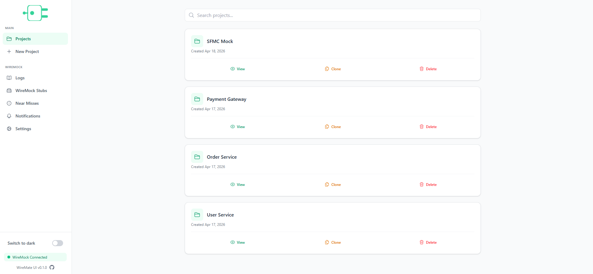
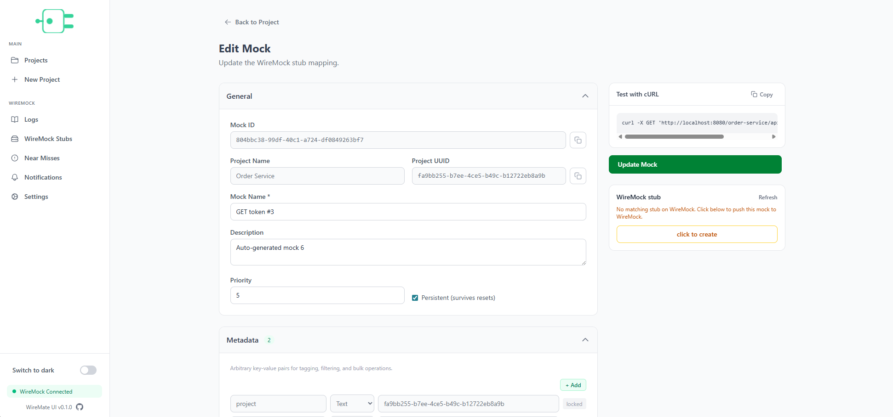
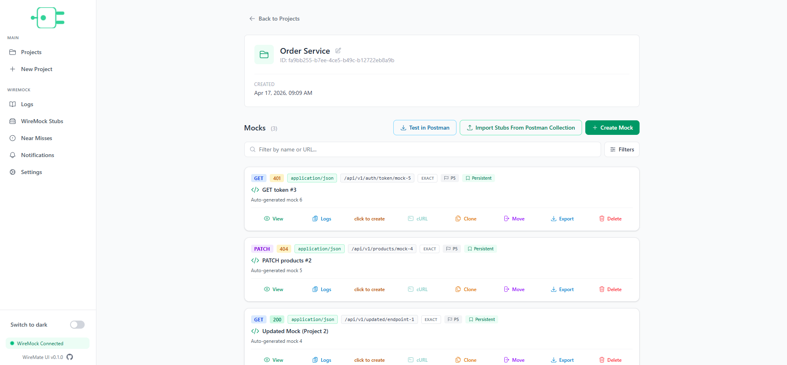
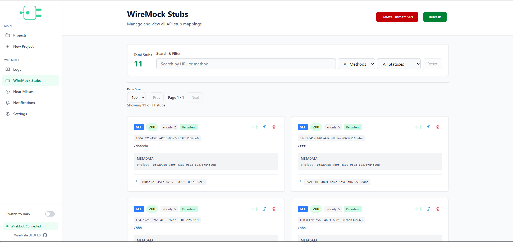
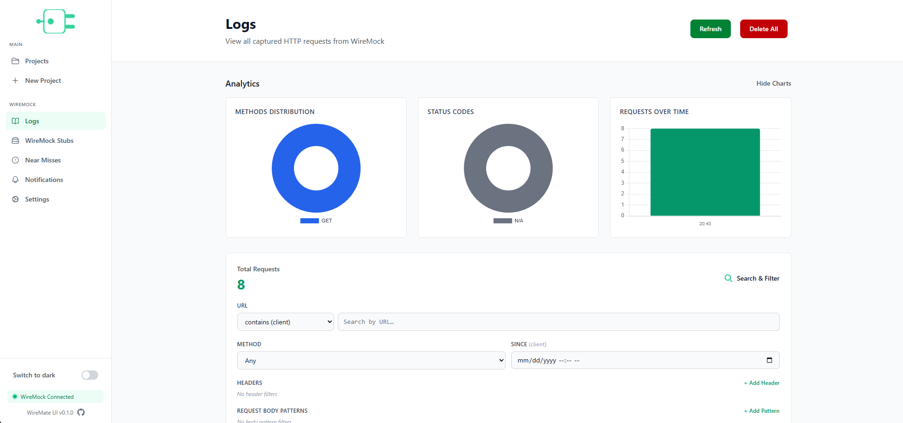
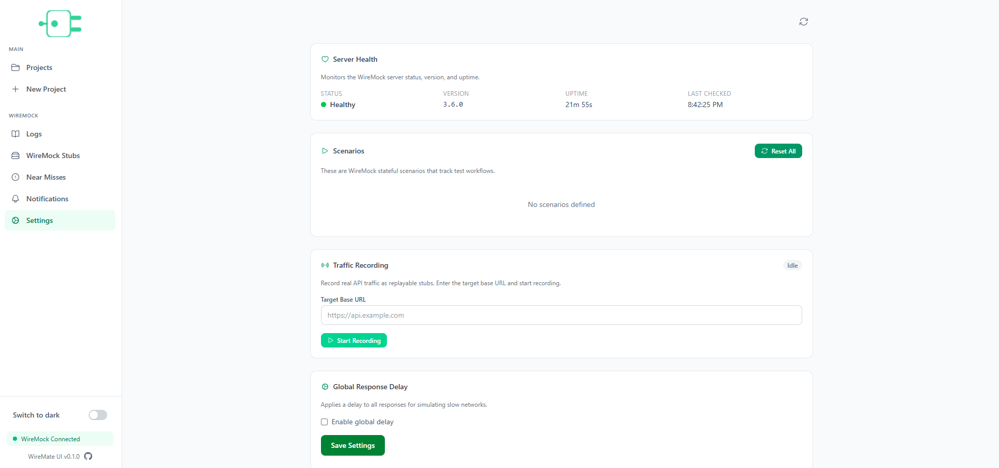

Mock APIs. Without the pain.
WireMate is a web UI and admin dashboard for your WireMock mock server — create, manage, and publish WireMock stubs visually so your team can build and test faster.
curl -X POST http://localhost:8080/__admin/mappings \
-H "Content-Type: application/json" \
-d '{
"request": {
"method": "GET",
"url": "/api/hello"
},
"response": {
"status": 200,
"jsonBody": { "message": "Hello from WireMock!" },
"headers": {
"Content-Type": "application/json"
}
}
}'From stub creation to debugging, WireMate handles the full mock lifecycle.
Create WireMock request/response mappings through an intuitive form. Methods, URLs, headers, JSON bodies, delays, and descriptions without handwritten JSON.
Organize mocks into projects with search and filtering. Quickly find what you need across all your projects and mocks.
Browse all active stub mappings on your WireMock server. Filter by method, search by URL, and view response previews in real time.
Inspect every request WireMock receives. Matched and unmatched. Filter by method, URL, or status with multiple search modes.
Manage WireMock, set global response delays, monitor server health, and perform admin operations from a single dashboard.
Add, edit, and delete mocks or projects with ease. Keep your workspace clean and up to date.
Duplicate any mock in one click. Save time by reusing existing configurations as a starting point.
Transfer mocks from one project to another. Reorganize your workspace as your needs evolve.
A background task detects differences between the database and WireMock. View all deltas on the notifications page.
Push your stubs directly to any WireMock server. Go from draft to live mock in seconds with instant feedback.
Switch between dark and light modes with a single click. Every view adapts seamlessly to your preferred theme.
All mappings are persisted to PostgreSQL. Never lose a stub. Search, edit, and restore at will.
Spin up the entire stack with Docker Compose. WireMock, PostgreSQL, and the UI. One command.
Export a single mock or all mocks in a project as WireMock-compatible JSON. Download ready-to-use stub mappings for backup, sharing, or importing into another WireMock instance.
Import a Postman Collection (v2.x) and automatically convert it into WireMock stubs. Headers, bodies, query params, and folder structures are preserved with sensible defaults.
A tour of WireMate: projects, the mock editor, live stubs, logs, and settings.






Four steps to mock nirvana.
Group your stubs by project. Stay organized from day one.
Use the ui to define requests, responses, delays, headers.
Publish your stubs to WireMock instantly. All stubs are persisted in the database.
Search through WireMock logs to inspect incoming requests and debug your stubs.
Get WireMate running locally in under a minute.
git clone https://github.com/mixaverros88/WireMate.git
cd WireMate
docker compose up -d